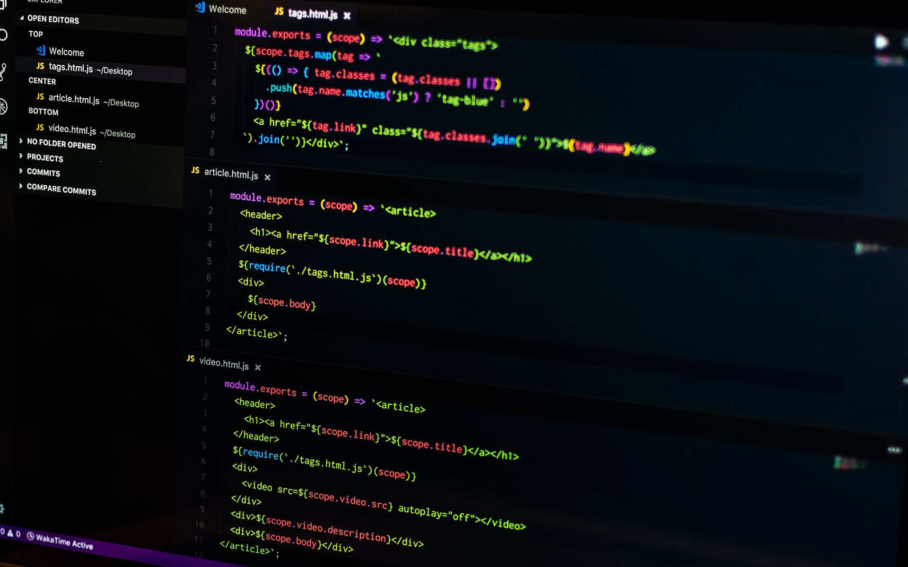

Como Montar o Ambiente de Programação
Antes de começar a programar, é essencial ter um ambiente bem configurado. Isso inclui escolher uma boa IDE, instalar ferramentas essenciais e organizar seu fluxo de trabalho. Neste artigo, vamos mostrar como montar um ambiente de programação eficiente e produtivo.
1.Escolha uma IDE
Uma IDE (Ambiente de Desenvolvimento Integrado) é um software que reúne diversas ferramentas para programar, como editor de código, depurador e terminal.
Aqui estão algumas opções populares:
💻 Visual Studio Code (VS Code)
O Visual Studio Code é uma IDE gratuita e de código aberto desenvolvida pela Microsoft. Ela é leve, rápida e altamente personalizável, com suporte a diversas linguagens de programação e extensões.
- ✅ Leve e rápido 🏃♀️💨
- ✅ Suporte a diversas linguagens (Python, JavaScript, C++, etc.) 🔥
- ✅ Extensões para personalizar o ambiente 🛠
- ✅ Terminal embutido 💻
- Acesse o site oficial: VS Code
- Baixe a versão para seu sistema operacional
- Instale seguindo as instruções
💻 Pycharm (Para Python)
O PyCharm é uma IDE desenvolvida pela JetBrains, especializada em Python. Ela oferece recursos avançados para programadores Python, como depuração remota, análise de código e suporte a frameworks populares.
- ✅ Desenvolvida para Python 🎶
- ✅ Depuração remota 💻
- ✅ Análise de código 💻
- ✅ Suporte a frameworks (Django, Flask, etc.) 💻
- Acesse o site oficial: PyCharm
- Baixe a versão Community (gratuita) ou Professional
- Instale seguindo as instruções e configure Python
💻 IntelliJ IDEA (Para Java e Kotlin)
O IntelliJ IDEA é uma IDE desenvolvida pela JetBrains, especializada em Java e Kotlin. Ela oferece recursos avançados para programadores Java, como refatoração de código, análise estática e suporte a frameworks populares.
- ✅ Desenvolvida para Java e Kotlin 🎶
- ✅ Refatoração de código 💻
- ✅ Análise estática 💻
- ✅ Suporte a frameworks (Spring, JavaFX, etc.) 💻
- Acesse o site oficial: IntelliJ IDEA
- Baixe a versão Community (gratuita) ou Ultimate
- Instale seguindo as instruções e configure Java JDK
💻 Eclipse (Para Java, C e mais)
O Eclipse é uma IDE gratuita e de código aberto desenvolvida pela Eclipse Foundation. Ela é amplamente usada para desenvolvimento em Java, C/C++ e outras linguagens, com suporte a plugins e extensões.
- ✅Gratuita e de código aberto
- ✅Suporte a diversas linguagens (Java, C/C++, etc.)
- ✅Plugins e extensões para personalizar o ambiente
- ✅Comunidade ativa e suporte técnico 💻
- Acesse o site oficial: Eclipse
- Baixe a versão para seu sistema operacional
- Instale seguindo as instruções e configure Java JDK
2. Instale um Gerenciador de Pacotes 📦
Um gerenciador de pacotes é uma ferramenta que facilita a instalação, atualização e remoção de bibliotecas e dependências em seu projeto. Aqui estão alguns gerenciadores populares:
- npm (Node Package Manager) para JavaScript 🚀
- Pip para Python 🐍
- Composer para PHP ⚙
- Maven/Gradle para Java ☕
3. Configure um Terminal e Git 🔧
Ter um terminal integrado à sua IDE facilita a execução de comandos, instalação de pacotes e interação com seu projeto. Além disso, é essencial configurar o Git para versionar seu código e colaborar com outros desenvolvedores.
- Terminal integrado à IDE 🔧
- Git para versionamento de código 🔧
- GitHub para hospedar seus repositórios 🔧
- Baixe e instale o Git: Download Git ⬇
- Configure um terminal como PowerShell, Git Bash ou Windows Terminal para facilitar comandos 💻
Há também o GitHub Desktop, que utiliza uma interface muito intuitiva e objetiva que pode te auxiliar, dispensando o uso do Git via terminal.
Vídeo recomendado: Git e GitHub para Iniciantes4. Organize Seus Projetos
Crie uma estrutura de pastas organizada, como: 📁 Projetos
- 📁Python 🐍
- 📁Web 🌐
- 📁Java ☕
- 📁C++ ⚙
Isso ajuda a manter tudo bem estruturado. 📌
📌 Dica Extra:Utilize um gerenciador de tarefas como Trello ou Notion para organizar seus estudos e projetos. ✅